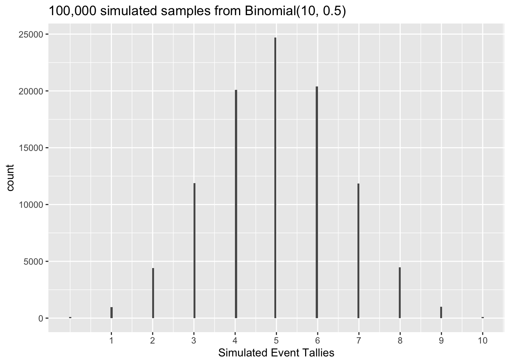
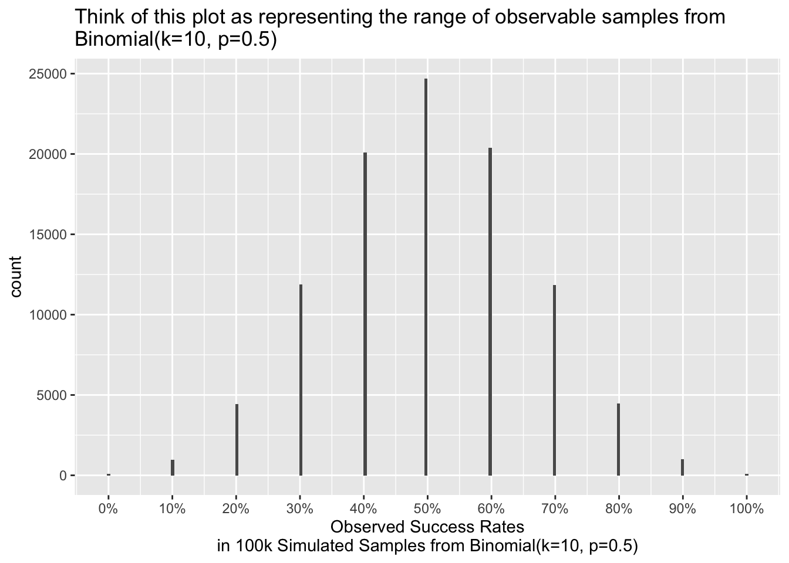
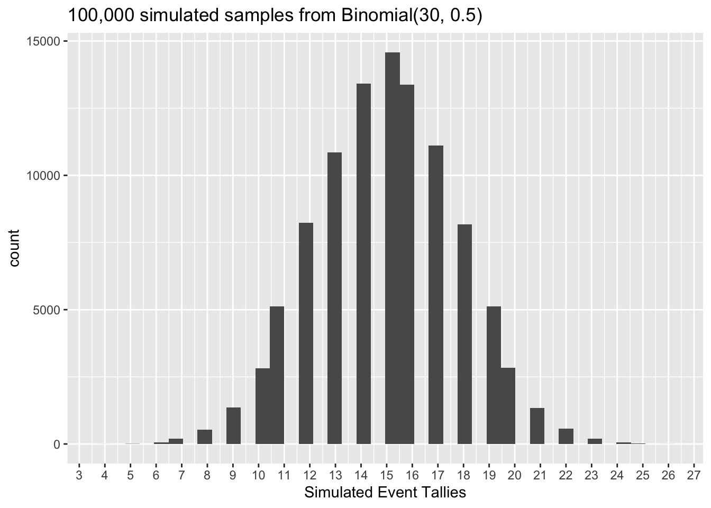
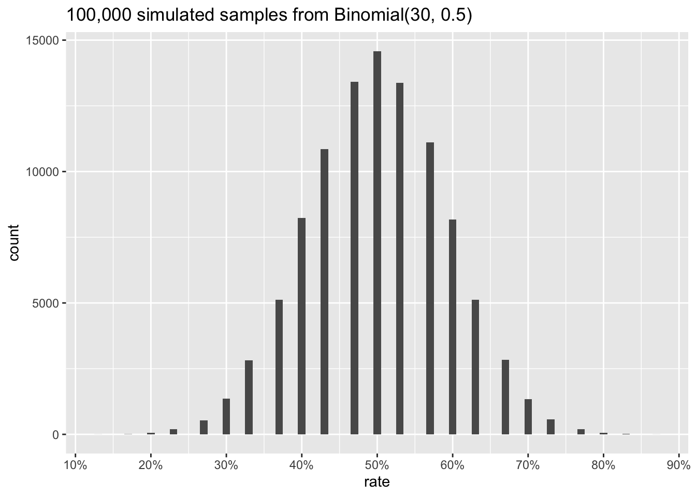
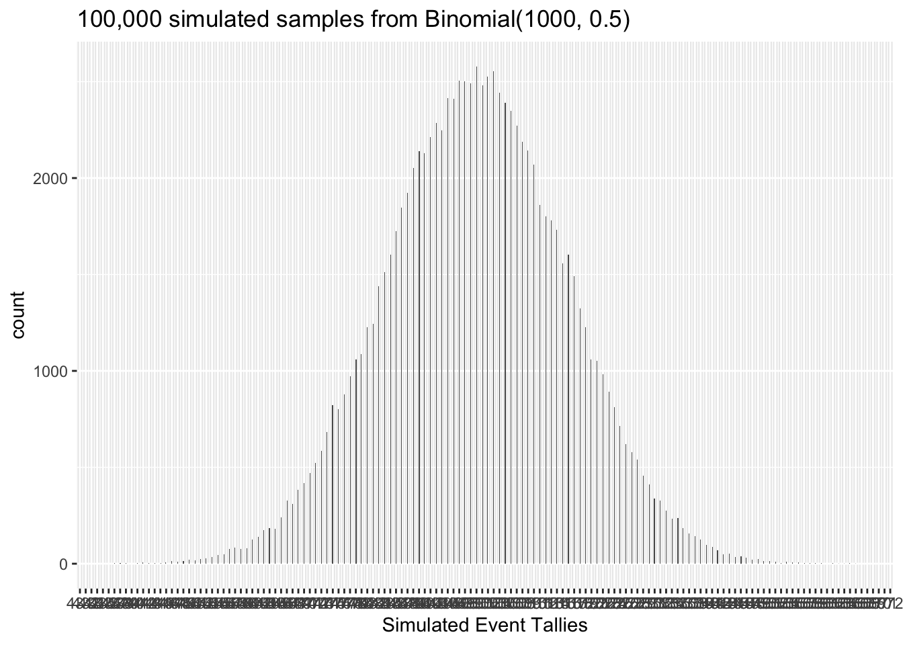
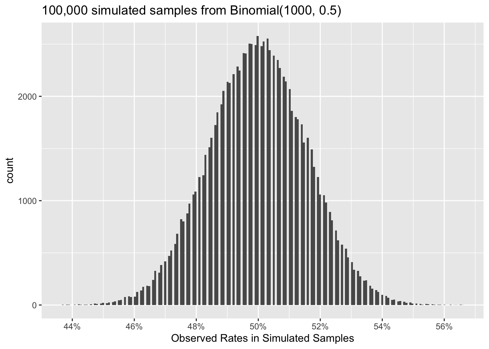
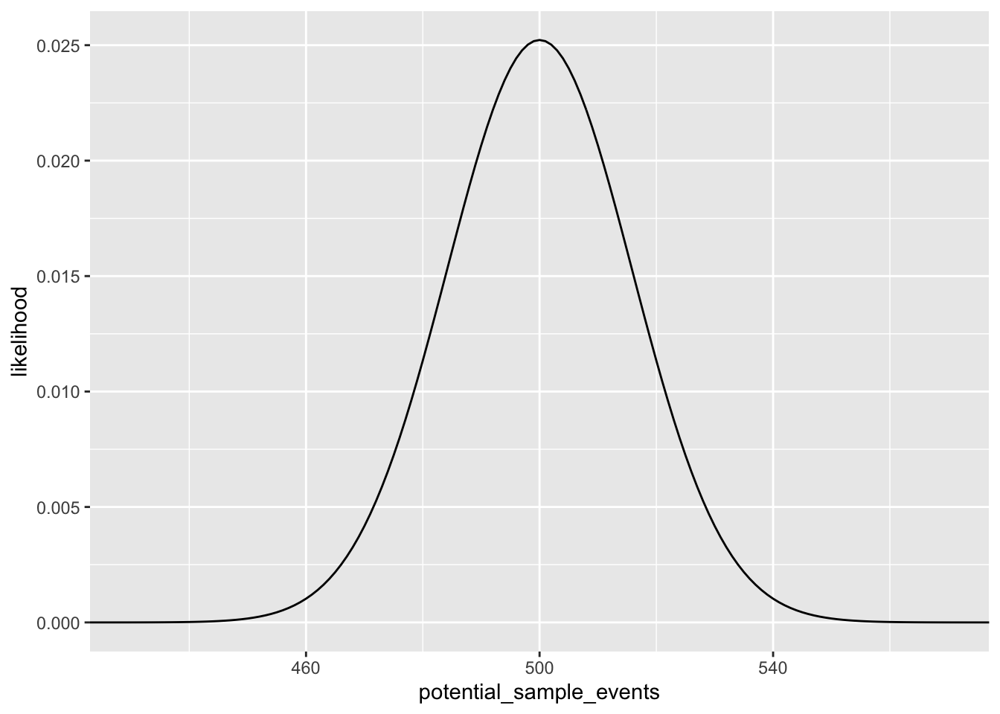
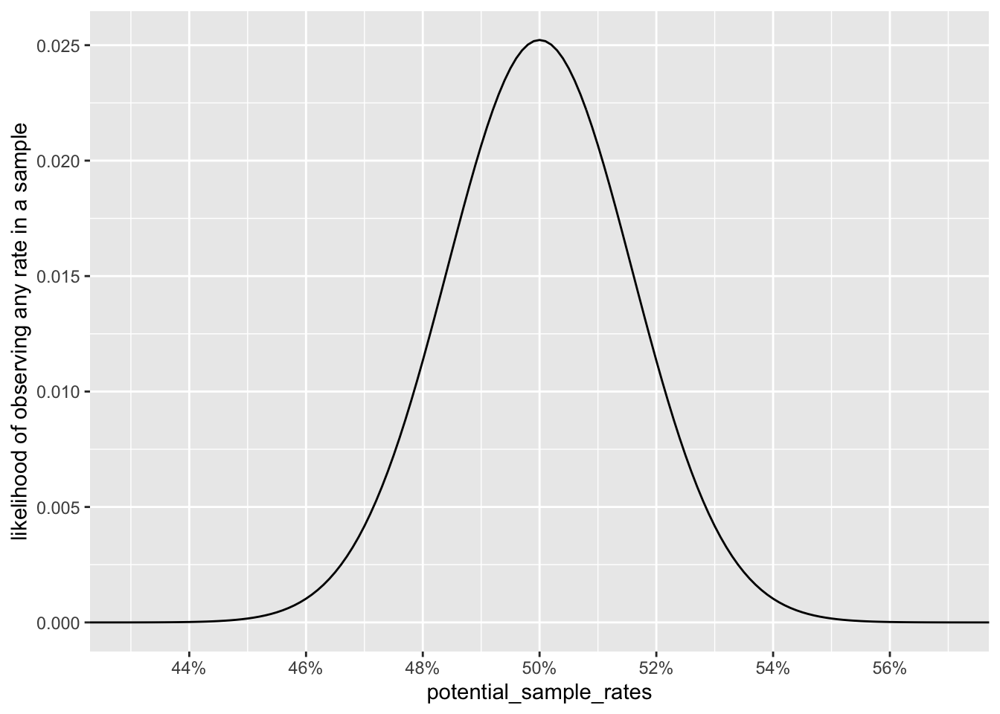
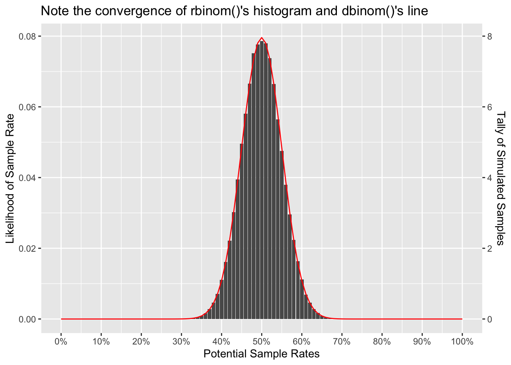

pacman::p_load(glue, scales, tidyverse)A million dollar beer
My career took a turn for the better about 5 years ago when I asked a friend who was much stronger in statistics how he got so good. “Data simulation!” he pronounced over his beer. “I simulate data with known relationships and when I can reliably uncover the relationship that I put there … then I trust the new modeling technique. I hardly use any math at the early stages of learning.” I am happy to confirm that this method works really, really well. However, data simulation is rarely taught in a standard statistics course, and so I will offer a primer in this blog.
The likelihood functions are your friends
You probably saw many a stack overflow post or textbook example start off with rnorm() or rbinom() and then jump right into a higher level data issue without ever properly introducing you to these wunderkinds. Allow me to offer a proper introduction.
Imagine you have the following scenario
CUSTOMERS <- 1e5
BASE_RATE <- 0.5You have 100,000 customers and historically 50% of them do something that you care about. Maybe it’s a click rate or a graduation rate or show up on time for an appointment. We all care about different things. Pick one that matters to you.
I work in tech so I care about conversion rates, and I’ll anchor to that. So imagine that historically I see 100,000 new potential customers show up in December and 50% of them convert. But we also know that such point estimates have variance in the real world. We can represent this variance with likelihood functions.
Quick vocab: each customer is a trial, each conversion is an event, and the binomial function outputs a tally of events within a sample or set of trials. The term “sample” can refer to an individual trialer or to a group of trialers. In this post, “sample” only refers to the group.
set.seed(42) # ensures reproducibility of simulations
events <-
rbinom(
n = 1, # samples (where 1 sample = 1 set of trials)
size = 10, # trials per sample
prob = .5 # Pr(event) in each trial
)
events[1] 7In the above example rbinom() simulated 7 events from 1 set of 10 trials. This could represent a sample of “7 heads on 10 flips” or “7 conversions among 10 website visitors.” But this is just one sample.
We can also simulate multiple samples:
set.seed(42) # ensures reproducibility of simulations
events_20 <-
rbinom(
n = 20, # samples (where 1 sample = 1 set of trials)
size = 10, # trials per sample
prob = .5 # Pr(event) in each trial
)
events_20 [1] 7 7 4 7 6 5 6 3 6 6 5 6 7 4 5 7 8 3 5 5As the number of samples grows it becomes more practical to represent the outcomes visually.
set.seed(42) # ensures reproducibility of simulations
df_1e5 <-
tibble(
events =
rbinom(
n = 1e5, # samples (where 1 sample = 1 set of trials)
size = 10, # trials per sample
prob = .5 # Pr(event) in each trial
)
)
df_1e5 |>
ggplot(aes(x = events)) +
geom_histogram(bins=200) +
scale_x_continuous(breaks = 1:10) +
labs(
title = glue("{comma(1e5)} simulated samples from Binomial(10, 0.5)"),
x = "Simulated Event Tallies") 
What does this mean? Well, one eye-opening insight for me was that this simulated distribution represents the range and frequency of possible samples that could manifest in 10 trials with a 50% probability of success.
There are other ways to represent this information, for instance we can convert these event tallies back into rates, which is often more intuitive.
df_1e5 |>
mutate(rate = events / 10) |>
ggplot(aes(x = rate)) +
geom_histogram(bins=200) +
scale_x_continuous(
breaks = pretty_breaks(10),
labels = percent) +
labs(title = str_wrap(glue("Think of this plot as representing the range of observable samples from Binomial(k=10, p=0.5)")), x = glue("Observed Success Rates\nin 100k Simulated Samples from Binomial(k=10, p=0.5)"))
set.seed(42) # ensures reproducibility of simulations
K <- 30
df_sim_k30_n1e5 <-
tibble(
events =
rbinom(
n = 1e5, # samples (where 1 sample = 1 set of trials)
size = K, # trials per sample
prob = .5 # Pr(event) in each trial
),
rate = events / K
)
df_sim_k30_n1e5 |>
ggplot(aes(x = events)) +
geom_histogram(bins=K+10) +
scale_x_continuous(breaks = 1:K) +
labs(
title = glue("{comma(1e5)} simulated samples from Binomial({K}, 0.5)"),
x = "Simulated Event Tallies") 
df_sim_k30_n1e5 |>
ggplot(aes(x = rate)) +
geom_histogram(binwidth = .01) +
scale_x_continuous(
breaks = pretty_breaks(10),
label = percent) +
labs(
title = glue("{comma(1e5)} simulated samples from Binomial({K}, 0.5)"),
"Observed Rates in Simulated Samples") 
set.seed(42) # ensures reproducibility of simulations
K <- 1e3
df_sim_k1e3_n1e5 <-
tibble(
events =
rbinom(
n = 1e5, # samples (where 1 sample = 1 set of trials)
size = K, # trials per sample
prob = .5 # Pr(event) in each trial
),
potential_sample_rates = events / K
)
df_sim_k1e3_n1e5 |>
ggplot(aes(x = events)) +
geom_histogram(bins=K+10) +
scale_x_continuous(breaks = 1:K) +
labs(
title = glue("{comma(1e5)} simulated samples from Binomial({K}, 0.5)"),
x = "Simulated Event Tallies") 
df_sim_k1e3_n1e5 |>
ggplot(aes(x = potential_sample_rates)) +
geom_histogram(bins=200) +
scale_x_continuous(
breaks = pretty_breaks(10),
label = percent) +
labs(
title = glue("{comma(1e5)} simulated samples from Binomial({K}, 0.5)"),
x = "Observed Rates in Simulated Samples") 
I think by now you’re starting to see the Central Limit Theorum kick in.
df_dens_k1e3_n1e5 <-
tibble(
potential_sample_events = seq(0,K,1),
likelihood = dbinom(potential_sample_events, K, BASE_RATE),
potential_sample_rates = potential_sample_events / K
)
df_dens_k1e3_n1e5 |>
ggplot(aes(x = potential_sample_events, y = likelihood)) +
geom_line() +
scale_x_continuous(
breaks =
) +
coord_cartesian(xlim = c(430, 570))
df_dens_k1e3_n1e5 |>
ggplot(aes(x = potential_sample_rates, y = likelihood)) +
geom_line() +
scale_x_continuous(
breaks = pretty_breaks(10),
labels = percent
) +
coord_cartesian(xlim = c(.430, .570)) +
labs(y = "likelihood of observing any rate in a sample")
WORKING HERE: I was hoping to overlay these plots
Demo pbinom() vs rbinom()
pbinom(.5*K, size = K, prob = BASE_RATE) # P[X≤x][1] 0.5126125Pretty close…
mean(df_sim_k1e3_n1e5$events <= .5*K)[1] 0.51474qbinom(.025, size = K, prob = BASE_RATE) [1] 469qbinom(.975, size = K, prob = BASE_RATE) [1] 531Dead match!
quantile(df_sim_k1e3_n1e5$events, c(.025, .975)) 2.5% 97.5%
469 531 Overlay plots
demo_K <- 100
df1 <- tibble(
x = seq(0,demo_K,1),
y = dbinom(x, demo_K, .5)
)
df2 <- tibble(
x = rbinom(1e5, demo_K, .5)
) |>
count(x) |>
mutate(
prop = n / sum(n)
)
# this join works very well to create a double y-axis
left_join(df1, df2, by = 'x') |>
ggplot(aes(x = x, y = y)) +
geom_col(aes(x=x, y=prop)) +
geom_line(color = 'red') +
scale_x_continuous(
breaks = pretty_breaks(10),
labels = ~percent(.x/demo_K)
) +
scale_y_continuous(
sec.axis =
sec_axis(
trans = ~.x*demo_K,
name = "Tally of Simulated Samples"
)
) +
labs(
x = "Potential Sample Rates",
y = "Likelihood of Sample Rate",
title = str_wrap("Note the convergence of rbinom()'s histogram and dbinom()'s line"))Warning: The `trans` argument of `sec_axis()` is deprecated as of ggplot2 3.5.0.
ℹ Please use the `transform` argument instead.Warning: Removed 58 rows containing missing values or values outside the scale range
(`geom_col()`).
Note how the likelihood density values from a discrete probability distribution like the binomnial are highly interpretable. For instance there is literally an 8% probability that \(Binomial(k=100,p=8)\) will manifest a sample rate of 50%.
When we dive into the normal distribution, you will see that the likelihood